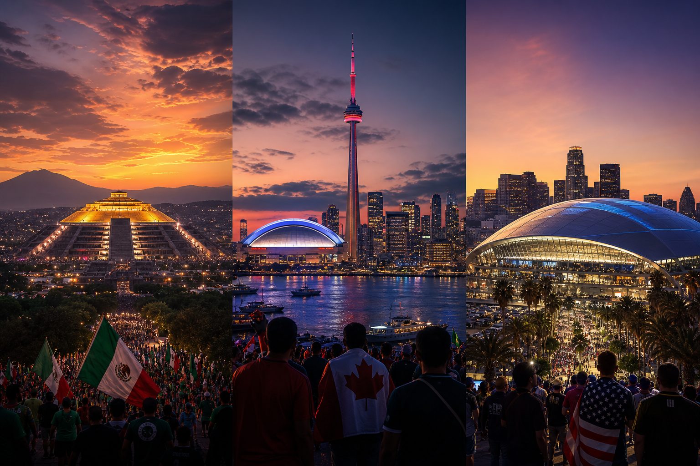
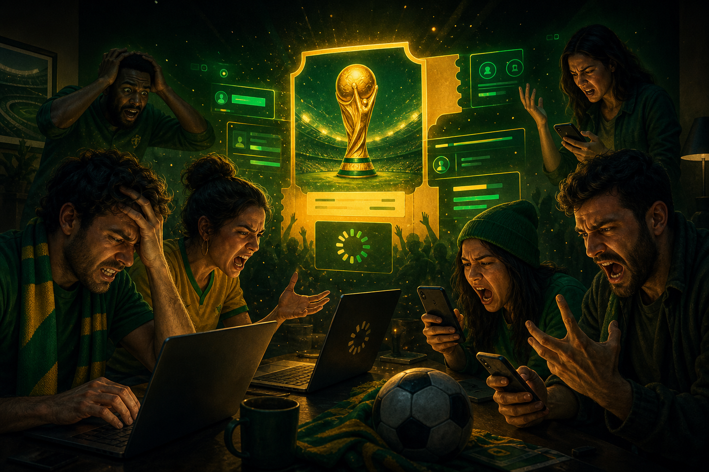
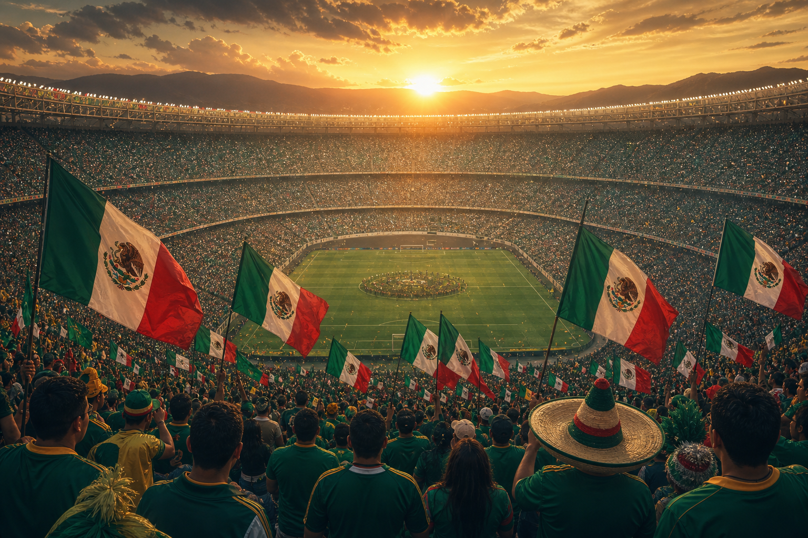
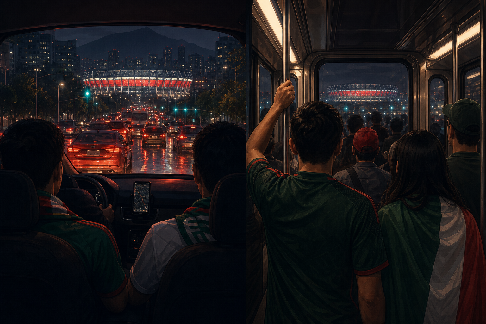
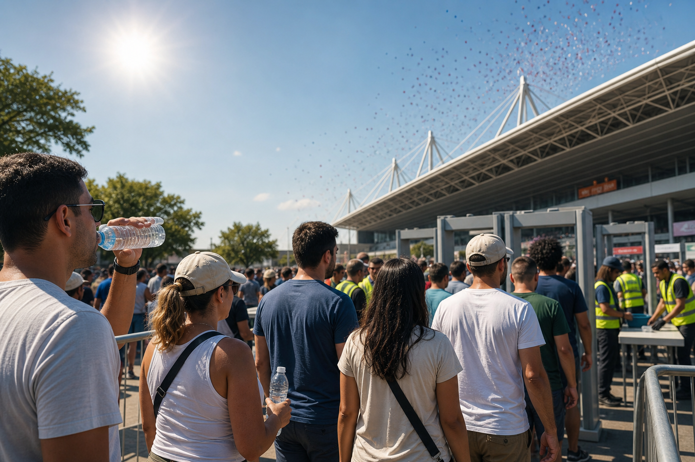

What happened
The facts: three openings, one tournament
For the first time, the World Cup does not have a single opening ceremony. Each host nation throws its own — tied to that country’s first match. There is no separate “ceremony only” ticket on FIFA.com. If you want the show, you buy the opener.
| City | Date | Ceremony | Kick-off | Match |
|---|---|---|---|---|
| Mexico City · Azteca | 11 Jun | ~11:30 CST | 13:00 CST | Mexico vs South Africa |
| Toronto · BMO Field | 12 Jun | ~13:30 ET | 15:00 ET | Canada vs Bosnia |
| Los Angeles · SoFi | 12 Jun | ~16:30 PT | 18:00 PT | USA vs Paraguay |
Arrive early. Security, fan zones and pre-show programming eat the morning — fans who treat it like a normal league kickoff routinely miss the walk-out.

Why fans keep arguing about it
What makes this opener different
- Tri-host politics as spectacle — the tournament literally starts three times; every nation wants “the real” opening.
- No ceremony ticket — casual fans search “opening ceremony tickets” and hit resale scams or empty FIFA pages.
- Price shock — opener matches are among the most expensive in the sales phases; Mexico City primary inventory largely gone months out.
- 48 teams, 104 matches — the biggest World Cup ever starts with the most complicated travel map on earth.
- Heat + security — June sun, long queues, and last-minute stadium rules (water bottles) land on day one.
In bars the fight is always the same: “Is the Azteca the only opener that counts?” Mexico fans say yes. Canadians and Americans say their night is just as official. FIFA says all three. Everyone buys flights anyway.

The night fans picture
Mexico City — where history meets noise
If one image sells the tournament, it is 11 June at the Estadio Azteca: Mexico vs South Africa, the world’s game returning to the cathedral that hosted 1970 and 1986. South Africa’s supporters still talk about 2010; Mexico’s about finally opening a home World Cup again.
Canada’s first-ever men’s World Cup host moment lands the next day in Toronto — smaller bowl, huge national pride. Hours later, SoFi fills for USA vs Paraguay — Hollywood scale, NFL infrastructure, maximum American noise.
You are not buying a concert ticket. You are buying the memory of where you were when the whole planet looked north.
That emotional pitch is why prices hurt and why fans forgive the logistics — until they are stuck in Tlalpan traffic at noon with a 13:00 kickoff.

Pub practicals
Taxis, metros, and “will we make kickoff?”
Mexico City
- Budget route: Metro Line 2 + light rail toward Azteca — crowded but proven on club nights.
- Ride-hail and sitio taxis from Roma/Condesa: agree app price; surge after the match is brutal — book return early.
- Rule of thumb: 2–3 hours before kickoff at a 87,000-seat bowl.
Toronto
- Streetcar from Union to Exhibition Place; GO Transit for GTA fans.
- Designated pickup zones — do not wander with surge pricing blind.
Los Angeles
- SoFi in Inglewood: Metro K Line helps; many fans still rideshare 45–90 min from downtown.
- Parking mostly pre-sold — do not assume you will find a lot on the day.

The fine print
Prices, scams, and stadium rules
Indicative ticket levels reported before kickoff (change daily):
- Mexico City — Category 4 from ~$370; top tiers into four figures.
- Toronto — late sales around $2,300+ for mid categories.
- Los Angeles — Category 4 from ~$560; hospitality $6,000+.
Only FIFA.com/tickets and FIFA’s official resale marketplace are safe. Everything else is a gamble.
Inside the ground on day one:
- US/Canada: one sealed disposable 20 oz water bottle allowed; hard reusable bottles banned after a late policy fight.
- Bag limits and clear-bag rules — check Stadium Code of Conduct the night before, not at the gate.
- Hydration breaks in matches do not help you in the queue at 11:00.
FIFA promises water at “normal venue prices.” Fans argue whether that is true. Bring sealed bottles where allowed; budget cash for concessions anyway.
